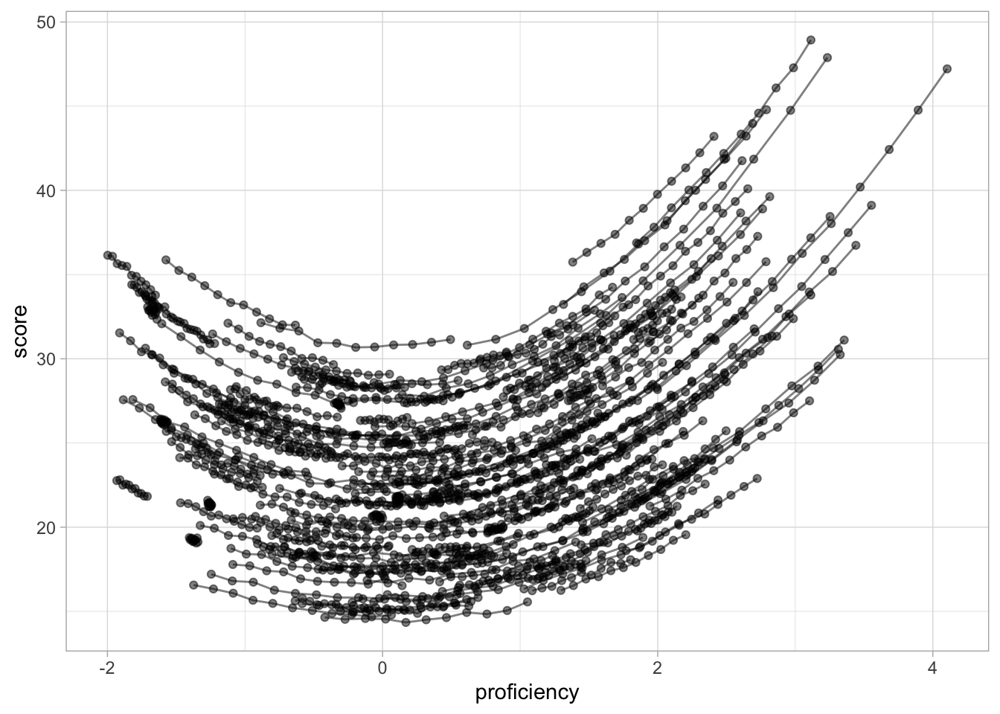
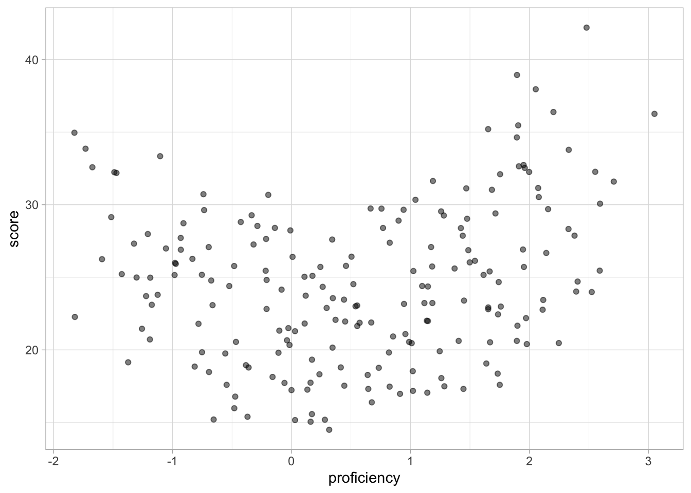
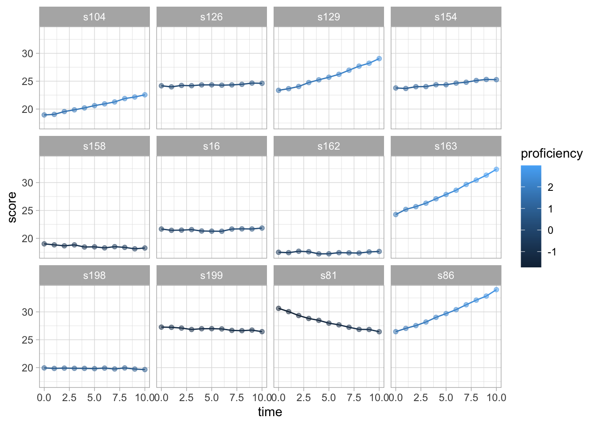
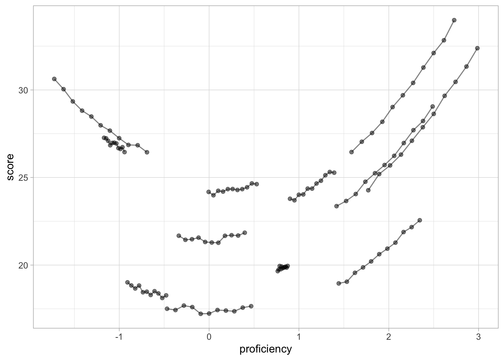
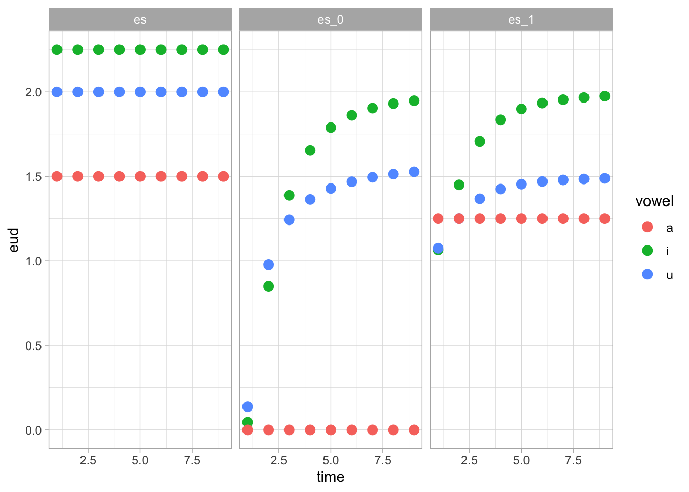
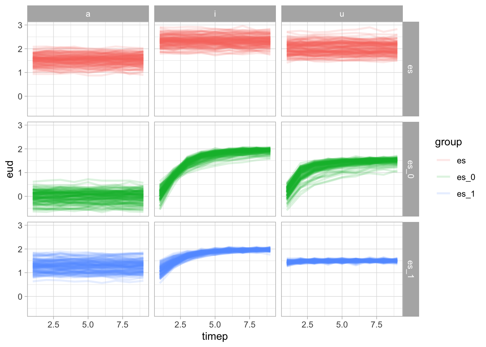
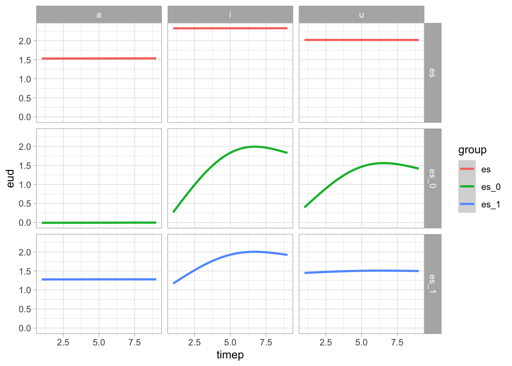
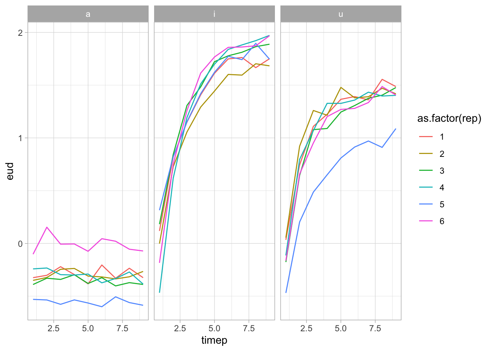

library(tidyverse)
theme_set(theme_light())
library(mgcv)
my_seed <- 478501 - Simulate data
Data 1: U-shaped effect
We simulate data of the U-shaped effect of language acquisition. Subjects take a test at 11 time points where they language proficiency is measured and a score value is obtained for how well they have learnt construction C.
set.seed(my_seed)
subjs <- 200
proficiency <- runif(subjs, -2, 2)
proficiency_b <- rnorm(subjs, 0.1, 0.05)
timep <- 11
intercept <- 15
proficiency_subjs <- list()
score_subjs <- list()
for (subj in 1:subjs) {
# Get proficiency for subject `subj` in time point 1 to 11
proficiency_subj <- proficiency[subj] + proficiency_b[subj] * 0:10
# Calculate score of subject `subj` based on their proficiency
score_subj <- intercept + proficiency_subj^2 + rnorm(1, 0, 0.5)
# Add random noise to score
score_subj <- score_subj * runif(1, 1, 2) + rnorm(timep, 0, 0.1)
# Add proficiency values to list
proficiency_subjs[subj] <- list(proficiency_subj)
# Add scores to list
score_subjs[subj] <- list(score_subj)
}
dat1 <- tibble(
score = unlist(score_subjs),
proficiency = unlist(proficiency_subjs),
subj = as.factor(paste("s", rep(1:subjs, each = timep), sep = "")),
time = rep(0:10, length.out = subjs * timep)
)
saveRDS(dat1, "data/dat1.rds")dat1 %>%
ggplot(aes(proficiency, score, group = subj)) +
geom_path(alpha = 0.5) +
geom_point(alpha = 0.5)
dat1 %>%
filter(time == 5) %>%
ggplot(aes(proficiency, score, group = subj)) +
geom_point(alpha = 0.5)
set.seed(my_seed)
dat1 %>%
filter(subj %in% sample(unique(dat1$subj), 12)) %>%
ggplot(aes(time, score, group = subj, colour = proficiency)) +
geom_path() +
geom_point(alpha = 0.5) +
facet_wrap(vars(subj))
set.seed(my_seed)
dat1 %>%
filter(subj %in% sample(unique(dat1$subj), 12)) %>%
ggplot(aes(proficiency, score, group = subj)) +
geom_path(alpha = 0.5) +
geom_point(alpha = 0.5)
Data 2: Time-series
We simulate word-final vowel reduction in learners of Spanish (simultaneous bilinguals, beginner late bilinguals and advanced late bilinguals).
- /i/, /u/, /a/
- i: bikini, casi, kiwi, cadi, pony, taxi, yeti, cursi, caqui, ferry
- u: tofu, tribu, urdu, haiku, ecu, quipu,
- a: casa, pasa, taza, masa, para, cosa, duda, tema, ropa, bella
Avg. formant values for monolingual English and Spanish speakers
| /i/ | /a/ | /u/ | ||
|---|---|---|---|---|
| Spanish | F1 | 286 (6) | 638 (36) | 322 (20) |
| F2 | 2147 (131) | 1353 (84) | 992 (121) | |
| English | F1 | 264 (34) | 783 (155) | 316 (43) |
| F2 | 2268 (207) | 1182 (152) | 1183 (153) |
# https://mycurvefit.com
x <- 1:9
y_esi <- rep(2.25, 9)
y_esu <- rep(2, 9)
y_esa <- rep(1.5, 9)
y_es0i <- 2 + (-0.3 - 2)/(1 + (x/2)^2.5)
y_es0u <- 1.6 + (-4 - 1.6)/(1 + (x/0.5)^1.5)
y_es0a <- rep(0, 9)
y_es1i <- 2 + (0.9 - 2)/(1 + (x/2)^2.5)
y_es1u <- 1.5 + (1 - 1.5)/(1 + (x/2)^2.5)
y_es1a <- rep(1.25, 9)tibble(
time = rep(x, 9),
eud = c(y_esi, y_esu, y_esa, y_es0i, y_es0u, y_es0a, y_es1i, y_es1u, y_es1a),
group = rep(c("es", "es_0", "es_1"), each = 9*3),
vowel = rep(rep(c("i", "u", "a"), each = 9), 3)
) %>%
ggplot(aes(time, eud, colour = vowel)) +
geom_point(size = 3) +
facet_grid(cols = vars(group))
set.seed(my_seed)
subjs <- 20
timep <- 9
reps <- 6
dat2_grid <- expand_grid(
subj = 1:subjs,
group = c("es", "es_0", "es_1"),
vowel = c("i", "u", "a"),
rep = 1:reps
)
subj_int <- rnorm(subjs * 3, 0, 0.15)
subj_slo <- rnorm(subjs * 3, 0, 0.25)
dat2 <- tibble()
for (rown in 1:nrow(dat2_grid)) {
# Get current row, group and vowel
this_row <- dat2_grid[rown,]
this_subj <- this_row$subj
this_group <- this_row$group
this_vowel <- this_row$vowel
this_int <- rnorm(1, 0, 0.2)
this_slo <- rnorm(1, 0, 0.2)
# Calculate EUD trajectory
if (this_group == "es") {
if (this_vowel == "i") {
this_eud <- rep(2.25 + subj_int[this_subj] + this_int, 9)
} else if (this_vowel == "u") {
this_eud <- rep(2 + subj_int[this_subj] + this_int, 9)
} else if (this_vowel == "a") {
this_eud <- rep(1.5 + subj_int[this_subj] + this_int, 9)
}
} else if (this_group == "es_0") {
if (this_vowel == "i") {
this_eud <- 2 + (-0.3 + subj_int[this_subj] + this_int - 2) /
(1 + (1:timep/2)^(2.5 + (subj_slo[this_subj] + this_slo) * 2))
} else if (this_vowel == "u") {
this_eud <- 1.6 + (-4 + subj_int[this_subj] + this_int - 1.6) /
(1 + (1:timep/0.5)^(1.5 + subj_slo[this_subj] + this_slo))
} else if (this_vowel == "a") {
this_eud <- rep(0 + subj_int[this_subj] + this_int, 9)
}
} else if (this_group == "es_1") {
if (this_vowel == "i") {
this_eud <- 2 + (0.9 + subj_int[this_subj] + this_int - 2) /
(1 + (1:timep/2)^(2.5 + subj_slo[this_subj] + this_slo))
} else if (this_vowel == "u") {
this_eud <- 1.5 + (1 + subj_int[this_subj] + this_int - 1.5) /
(1 + (1:timep/0.5)^(2.5 + subj_slo[this_subj] + this_slo))
} else if (this_vowel == "a") {
this_eud <- rep(1.25 + subj_int[this_subj] + this_int, 9)
}
}
# Add noise
this_eud <- this_eud + rnorm(9, 0, 0.05)
# Add eud to dat2
this_row$eud <- list(this_eud)
this_trial <- unnest(this_row, eud)
this_trial$timep <- 1:timep
dat2 <- bind_rows(dat2, this_trial)
}
dat2 <- dat2 %>%
mutate(
id = paste(group, subj, rep, sep = ".")
)
saveRDS(dat2, "data/dat2.rds")dat2 %>%
ggplot(aes(timep, eud, group = id, colour = group)) +
geom_path(alpha = 0.15, linewidth = 1) +
facet_grid(cols = vars(vowel), rows = vars(group))
dat2 %>%
ggplot(aes(timep, eud, colour = group)) +
geom_smooth(method = "gam", formula = y ~ s(x, k = 3)) +
facet_grid(cols = vars(vowel), rows = vars(group))
dat2 %>%
filter(subj == 1, group == "es_0") %>%
ggplot(aes(timep, eud, group = id, colour = as.factor(rep))) +
geom_path() +
facet_grid(cols = vars(vowel))
dat2_gam <- gam(eud ~ s(timep, by = interaction(vowel, group), k = 9), data = dat2)
summary(dat2_gam)
Family: gaussian
Link function: identity
Formula:
eud ~ s(timep, by = interaction(vowel, group), k = 9)
Parametric coefficients:
Estimate Std. Error t value Pr(>|t|)
(Intercept) 1.454955 0.006556 221.9 <2e-16 ***
---
Signif. codes: 0 '***' 0.001 '**' 0.01 '*' 0.05 '.' 0.1 ' ' 1
Approximate significance of smooth terms:
edf Ref.df F p-value
s(timep):interaction(vowel, group)a.es 1.000 1.000 0.008 0.929
s(timep):interaction(vowel, group)i.es 1.000 1.000 0.002 0.969
s(timep):interaction(vowel, group)u.es 1.000 1.000 0.001 0.979
s(timep):interaction(vowel, group)a.es_0 1.000 1.000 0.008 0.928
s(timep):interaction(vowel, group)i.es_0 4.353 5.326 167.340 <2e-16 ***
s(timep):interaction(vowel, group)u.es_0 5.406 6.462 66.415 <2e-16 ***
s(timep):interaction(vowel, group)a.es_1 1.000 1.000 0.002 0.968
s(timep):interaction(vowel, group)i.es_1 3.276 4.055 50.179 <2e-16 ***
s(timep):interaction(vowel, group)u.es_1 1.000 1.000 0.682 0.409
---
Signif. codes: 0 '***' 0.001 '**' 0.01 '*' 0.05 '.' 0.1 ' ' 1
R-sq.(adj) = 0.136 Deviance explained = 13.7%
GCV = 0.41858 Scale est. = 0.41772 n = 9720